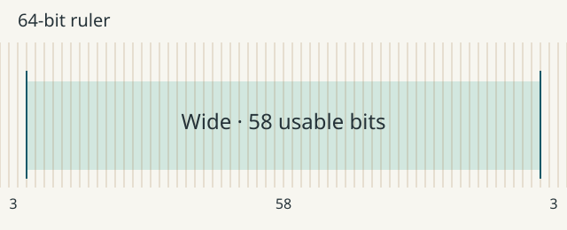

One shared rhythm
The first line sits one bit inside the block. At 1200px, that is 18.75px.
Backgrounds reach their assigned region edges.
Core padding utility · 0.5 candidate
The core gp_pad and gp_pad--2 utilities add one or two ruler bits of content padding without ruler measurement. Track wrappers stay unpadded.
Padding follows assigned tracks without measurement; it does not add gaps.
01 · Touching color blocks
Padding belongs to each colored item. Neat regions keep touching; both the background edge and ruler alignment remain fixed.
The first line sits one bit inside the block. At 1200px, that is 18.75px.
Backgrounds reach their assigned region edges.
A longer record can wrap and set the height of a shared row. The utility supplies neither a height nor a type scale.
Changing the width changes the inset continuously, without choosing another spacing token.
The padding lives inside the items, leaving zero gutter between adjacent blocks.
<div class="gp_ruler">
<section class="gp_layout--peers-3 gp_spacing--neat">
<article class="gp_pad">Content</article>
…
</section>
</div>02 · Image edges and text insets
The image fills the article. Only the text layer carries gp_pad. Positioning, image crop, contrast treatment, and minimum height are specimen CSS.

<article class="overlay">
<img src="…" alt="…">
<div class="overlay-copy gp_pad">Heading and caption</div>
</article>03 · Continued tracks and a rebased ruler
Left: the parent bit continues into two nested items. Right: a local ruler divides its assigned width into 64 new bits. Neither continuation wrapper has padding.
Continued ruler
Shared tracks keep their original width. This inset follows the outer ruler, not this small block's width.
Continued ruler
The track wrapper and nested layout retain their edges. Padding is applied only to these content items.
Local ruler
This padding is one sixty-fourth of the local ruler.
Local ruler
A new spatial rhythm starts here. It need not match the parent's inset.
<article class="gp_continue_tracks">
<div class="gp_layout--peers-2 gp_spacing--full">
<article class="gp_pad">Parent bit</article>
…
</div>
</article>
<article class="gp_continue_tracks">
<div class="gp_rebase_64">
<div class="gp_layout--peers-2 gp_spacing--full">
<article class="gp_pad">Local bit</article>
…
</div>
</div>
</article>Both selectors have zero specificity. They use assigned-track percentages and work without measurement. Apply a utility to the item or a full-region content layer, keeping ruler and continuation wrappers unpadded. Width-changing intermediate wrappers can change the percentage basis. Gutters, margins, overlay positioning, and typography remain separate choices. Used values can differ from the ideal ruler fraction by browser subpixel rounding.